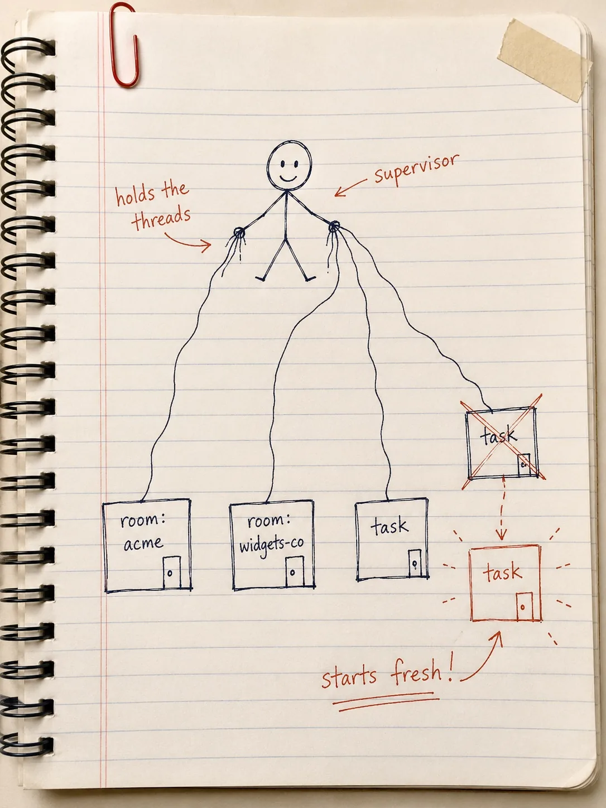

A hand-drawn practice-notebook sketch: ballpoint linework with red-pen annotation on cream ruled paper, slightly imperfect strokes, hand-lettered arrows and margin marks, a hint of tape or paper-clip realism. Warm and informal — obviously drawn by a person, not rendered. Subject: a cutaway sketch of a spiral notebook page showing a friendly stick-figure "supervisor" holding loose threads that connect down to several small labeled boxes ("room: acme", "room: widgets-co", "task"), one box drawn crossed-out and mid-redraw to show a restart happening, red-pen arrows pointing at the restart with a handwritten note like "starts fresh!". No baked-in title text — the app overlays the title. Generous margins, nothing important near the edges. Target size ~960×1280px, 3:4 portrait; the art is letterboxed into that box so keep the subject centred.
Generate this with your image agent, then drop the file here.
Elixir OTP, Plainly
A small, practical notebook on building things that don't fall over — in the plainest words we can find.
What's in here
- A Different Way to Build Software otp overview
- Little Workers That Talk By Passing Notes processes
- A Worker With a Job Description GenServer
- Letting a Worker Fall Down Safely supervision
- Drawing the Family Tree of Who Watches Whom supervision trees
- Workers You Hire on the Spot DynamicSupervisor + Registry
- Errands, Timers, and Ways to Trip Yourself Up Task, traps
- Proving It Falls Down the Right Way testing
One evolving project runs through every chapter: a small multi-room notification system, built one plain idea at a time.